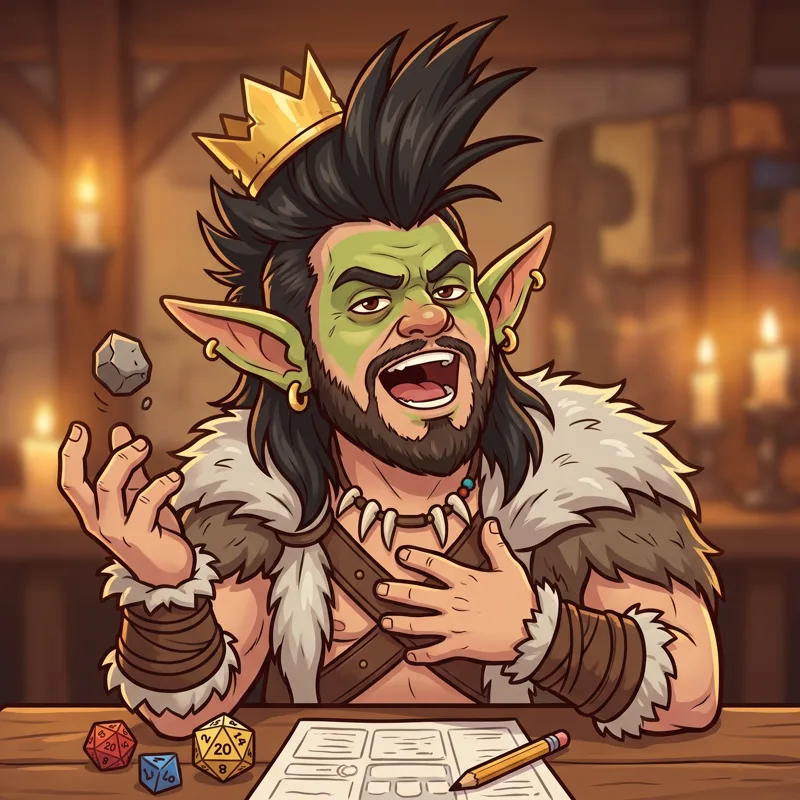

Ragnuk

 Guerrero
Guerrero
Ragnuk, Príncipe de los Traknuk
Después de su gesta: Ragnuk, Rey de los Traknuk
Lo echaron de una tienda por ser goblin. Rompió la vidriera con una piedra. Se sabe de memoria todas las leyendas de Xerth.
Habilidad
En la Posada: +20% de monedas en todas las expediciones. Si va: +60% en la suya
Es el valor en Nv 10: en Nv 1 rinde la mitad y crece con cada nivel.
Cómo se consigue
Ganando su Rumor de leyenda (expedición dorada). Llega en Nv 5. Si lo despedís, no vuelve.
Gesta
Ragnuk y la corona que nadie le dio · Fauces de Ceniza
Cómo termina · Mostrar spoiler
Ignarok le debía una corona a los Traknuk desde hace siglos. Ragnuk la cobró. Con intereses.
Combos
- La Balada de Xerth (con Xerth): +15% de éxito
- Sigilo arruinado (con Elioni): Elioni pierde su bonus, pero +30% de monedas
Nombres de grupo
Mostrar spoiler
- El Bardo y su Leyenda: Xerth + Ragnuk
- Sigilo a los Gritos: Ragnuk + Elioni
- Estofado Real: Kupgush + Ragnuk
- Deudores de Ignarok: Slim Noggins + Tink Silvabajo + Ragnuk
Crónicas
Se desbloquean en el juego al subir de nivel. Cada una da 1 Runa la primera vez que la leés.
Capítulo 1 (Nv 1) · Mostrar spoiler
El príncipe
Ragnuk es un goblin, y además es príncipe. De los Traknuk, las tribus del norte, y no deja que nadie se olvide. Camina con el mentón en alto, habla de sí mismo en tercera persona cuando está contento y exige que lo llamen "Alteza" por lo menos una vez por día. Bajó al sur a demostrar que un goblin puede ser tan noble como cualquiera. Lo está demostrando a los gritos, que es como hace todo.
Capítulo 2 (Nv 5) · Mostrar spoiler
La vidriera
En su primera semana en el sur, Ragnuk entró a una tienda de las minas a comprar una capa digna de un príncipe. El dueño, un enano de túnica rosa llamado Malamar, lo echó por ser goblin. Ragnuk salió, buscó una piedra, la pesó con cuidado y rompió la vidriera de un tiro. Después dejó una moneda en el mostrador. "Para el vidrio", dijo. "La capa me la debés". Malamar todavía no se la pagó.
Capítulo 3 (al completar su gesta) · Mostrar spoiler
La corona que nadie le dio
Hace siglos, Ignarok le pidió prestada la corona a un rey Traknuk y nunca la devolvió. Ragnuk se enteró por las canciones de su abuela. Fue a las Fauces de Ceniza con la cuenta hecha: la corona, más siglos de intereses. El dragón, que anota cada moneda que le deben, por primera vez tuvo que pagar una deuda. Ragnuk volvió con la corona y con tantas monedas que le dolía la espalda. Desde ese día ya no es Príncipe: es Ragnuk, Rey de los Traknuk.
Capítulo 4 (Nv 15) · Mostrar spoiler
La Balada de Xerth
Ragnuk es el fanático número uno de Xerth. Se sabe de memoria todas sus leyendas, y las que no se sabe las inventa. Cada noche, en la Posada, canta la Balada de Xerth, a todo pulmón y en cuatro tonos distintos. Xerth jura que es todo verdad. El único problema es el sigilo: cuando va con Elioni, Ragnuk anuncia la llegada del grupo a los gritos y rompe una ventana. Elioni pierde el factor sorpresa. Ragnuk gana el doble de monedas. Para él es un buen negocio.
Capítulo 5 (Nv 20) · Mostrar spoiler
El tesorero
Con la corona en la cabeza, todos esperaban que Ragnuk volviera al norte a reinar. No volvió. Dice que un rey tiene que vigilar su tesoro, y que su tesoro ahora está en la Posada. Se nombró tesorero sin que nadie se lo pidiera, cobra cada deuda con intereses y por eso el grupo gana más monedas cuando él anda cerca. TomTom le dice "Alteza" una vez por día. Ragnuk le perdona la cuenta del estofado de fénix. Es un acuerdo real.
Su jugador

Este personaje es jugado por un jugador real de la campaña de rol de mesa que inspiró el juego.